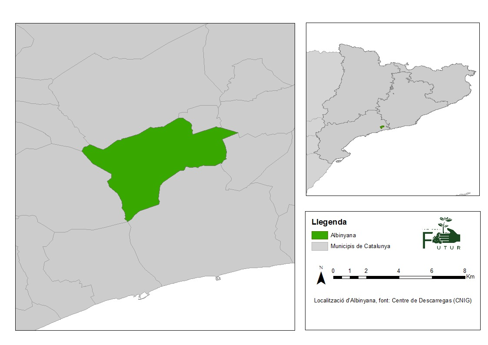

Introducció del Projecte
L’objectiu principal del nostre projecte és investigar i comprendre a fons la producció agrícola a
Albinyana amb l'objectiu de millorar la seva eficiència, sostenibilitat i resiliència. A través de la
recerca i l'anàlisi de les pràctiques agrícoles locals, volem identificar oportunitats per a la millora
i desenvolupar solucions pràctiques que beneficiïn tant als agricultors com al medi ambient.
Cal destacar els objectius secundaris que complementen el propòsit del projecte, ajudant-nos a abordar
qüestions específiques i a treballar cap a la consecució dels nostres objectius més amplis de millora de
la producció agrícola a Albinyana.
- Analitzar els principals cultius agrícoles de la zona i identificar els factors que influeixen en la
seva producció i rendiment.
- Avaluar l'impacte de les pràctiques agrícoles actuals sobre la salut del sòl, la qualitat de l'aigua
i la biodiversitat local.
- Investigar les necessitats i preocupacions dels agricultors locals, incloent-hi qüestions com la
gestió dels recursos hídrics, la utilització de pesticides i la gestió de residus agrícoles.
- Desenvolupar recomanacions i estratègies pràctiques per millorar la sostenibilitat i la eficiència
de l'activitat agrícola a Albinyana, incloent-hi l'ús de pràctiques agrícoles sostenibles, l'adopció
de tecnologies més eficients i la millora de la gestió dels recursos naturals.
- Col·laborar amb la comunitat agrícola d'Albinyana per implementar i millorar les recomanacions i
estratègies desenvolupades durant el projecte, fomentant la participació i el diàleg entre els
diferents actors involucrats en l'activitat agrícola local.
Albinyana
Albinyana és un pintoresc municipi situat a la comarca del Baix Penedès, en la província de Tarragona,
Catalunya. Amb una ubicació privilegiada entre el mar Mediterrani i les serres prelitorals, Albinyana
gaudeix d'un entorn natural diversificat i un clima mediterrani suau que fa d'aquest poble un lloc idoni
per al desenvolupament de l'activitat agrícola.
Amb una població de 2.664 habitants el 2023, Albinyana té una superfície de 19,37 km², incloent-hi una
àrea rural predominant que representa una part significativa del seu territori. La densitat poblacional
és de 137,5 habitants per quilòmetre quadrat i l'altitud mitjana del municipi és de 198 metres sobre el
nivell del mar.
L'economia d'Albinyana ha estat tradicionalment basada en l'agricultura, amb una llarga història de
producció de cultius com la vinya, els olivars, els cítrics i els fruits secs. A més de l'agricultura,
el turisme juga un paper cada cop més important en l'economia local, amb visitants que arriben per
gaudir de les platges properes, la gastronomia local i les activitats a l'aire lliure.
La comunitat agrícola d'Albinyana és una part integral de la vida del poble, mantenint les seves
tradicions i contribuint al seu desenvolupament econòmic. Tot i això, com molts altres territoris,
enfronta reptes en l'àmbit agrícola, com ara la gestió dels recursos hídrics, la sostenibilitat de les
pràctiques agrícoles i l'adaptació als canvis climàtics.

Anàlisi de l'Evolució Agrícola i Social
A partir de les dades proporcionades per la cooperativa del mateix municipi heme pogut entendre les dinàmiques econòmiques, centrant-nos en l’agricultura de la població.
| Campanya |
Socis Productors |
Raïm |
Olives |
Garrofes |
| 2013/2014 |
301 |
7.727.023 |
481.822 |
233.990 |
| 2014/2015 |
298 |
6.998.204 |
572.000 |
401.908 |
| 2015/2016 |
295 |
7.303.062 |
735.415 |
132.890 |
| 2016/2017 |
290 |
6.146.874 |
470.659 |
233.918 |
| 2017/2018 |
286 |
4.526.091 |
611.980 |
125.473 |
| 2018/2019 |
288 |
6.188.525 |
486.270 |
271.780 |
| 2019/2020 |
294 |
6.230.242 |
732.480 |
193.400 |
| 2020/2021 |
293 |
5.418.155 |
612.690 |
367.480 |
| 2021/2022 |
296 |
5.732.820 |
532.161 |
182.160 |
| 2022/2023 |
298 |
5.190.194 |
379.036 |
191.030 |
| Taula 1. Evolució de la Producció Agrícola i Nombre de Socis Productors (2013/2014 - 2022/2023) |
A partir d'aquestes dades de la cooperativa agrícola d'Albinyana, es poden observar algunes tendències interessants al llarg dels anys en la producció de raïm, olives i garrofes, així com en el nombre de socis productors:
- Nombre de socis productors: Ha mostrat una tendència lleugerament decreixent des dels 301 socis del 2013/2014 fins als 298 socis del 2022/2023, amb fluctuacions lleugeres en alguns anys.
- Producció de raïm: La producció de raïm ha experimentat variacions significatives al llarg dels anys, amb pics i caigudes. Per exemple, es va observar una disminució significativa de la producció entre el 2013/2014 i el 2014/2015, seguida d'una recuperació el 2015/2016. Després, sembla haver-hi una certa estabilització amb fluctuacions moderades.
- Producció d'olives: La producció d'olives ha mostrat una tendència generalment creixent fins al 2019/2020, després de la qual sembla haver-hi una disminució significativa el 2020/2021, seguida d'una certa recuperació el 2021/2022 i el 2022/2023.
- Producció de garrofes: La producció de garrofes ha estat relativament estable fins al 2017/2018, després de la qual ha experimentat fluctuacions més significatives, amb algunes caigudes importants seguides de recuperacions parcials.
|
| Gràfic 1. Evolució de la Producció Agrícola i Nombre de Socis Productors (2013/2014 - 2022/2023) |
Amb aproximadament el 13% de la població de Albinyana dedicant-se a l'agricultura com a socis productors de la cooperativa agrícola, es pot afirmar que l'agricultura té una rellevància notable en la comunitat local. Encara que el percentatge pugui semblar modest a primera vista, cal tenir en compte que aquesta xifra reflecteix els socis oficials de la cooperativa i pot no incloure altres residents que també estiguin involucrats en l'activitat agrícola de manera més casual o informal.
L'agricultura no només proporciona mitjans de vida per a aquells que hi estan directament involucrats, sinó que també pot tenir un impacte en l'economia local, el paisatge, la cultura i la identitat de la comunitat. A més, una cooperativa agrícola com aquesta pot servir com a centre de cohesió social i cooperació entre els membres de la comunitat agrícola.
Desenvolupament de resultats
Impacte Ambiental de les Pràctiques Agrícoles
Salut del Sòl:
- S'ha observat una disminució en la matèria orgànica del sòl en les zones sotmeses a pràctiques
agrícoles intensives, indicant una pèrdua de fertilitat.
- L'estructura del sòl en aquestes àrees també ha mostrat signes de degradació, amb una compactació
major i una menor capacitat de retenció d'aigua.
- Malgrat això, s'han trobat àrees on s'ha implementat la rotació de cultius i l'ús de cobertes
vegetals que presenten una millora notable en la salut del sòl, amb una major biodiversitat
microbiològica i una millor estructura.
Qualitat de l'Aigua:
- Els resultats mostren una contaminació puntual de l'aigua per nitrats i pesticides en algunes zones
agrícoles, especialment prop de cursos d'aigua i zones humides.
-
En general, els nivells de nutrients i contaminants en l'aigua són moderats, però s'han identificat
zones amb concentracions elevades, indicant la necessitat d'una millor gestió dels residus agrícoles
i l'ús de pesticides.
- En contrapartida, les zones amb pràctiques agrícoles més sostenibles, com ara la agricultura
ecològica, mostren una millor qualitat de l'aigua, amb nivells de contaminants molt més baixos.
Biodiversitat Local:
- S'ha observat una pèrdua de biodiversitat en les zones agrícoles intensives, amb una reducció en la
presència d'espècies vegetals i animals natives.
-
Tot i això, les zones amb pràctiques de conservació de la biodiversitat, com ara la creació de zones
tampó i la preservació d'hàbitats naturals, mostren una diversitat biològica més rica i equilibrada.
- La presència d'elements paisatgístics com ara arbres en llinies de conreu o prats florits ha
afavorit la presència d'auxiliars de cultius i la biodiversitat local.
Necessitats i preocupacions locals
A través de consultes i entrevistes amb els agricultors, hem identificat diverses necessitats i
preocupacions rellevants, incloent-hi la gestió dels recursos hídrics, la utilització de pesticides i la
gestió de residus agrícoles.
Gestió dels recursos hídrics:
- Els agricultors han expressat una preocupació substancial sobre la disponibilitat d'aigua per a
l'irrigació dels conreus, especialment en èpoques de sequera.
-
S'ha destacat la importància de millorar la infraestructura d'irrigació i implementar pràctiques de
conservació de l'aigua per garantir un ús més eficient dels recursos hídrics disponibles.
Utilització de pesticides:
-
Un altre punt de preocupació comú entre els agricultors és l'ús excessiu de pesticides i els seus
efectes potencials sobre la salut humana i el medi ambient.
-
S'ha expressat la necessitat de promoure pràctiques agrícoles més sostenibles i alternatives al ús
de pesticides químics, com ara la implementació de tècniques de control biològic de plagues i l'ús
de pesticides naturals.
Gestió de residus agrícoles:
-
En relació amb la gestió de residus agrícoles, s'ha assenyalat la importància de millorar els
sistemes de recollida i gestió dels residus, especialment en el cas de residus orgànics com ara la
poda i els restes de collita.
-
S'han destacat les oportunitats per implementar pràctiques de compostatge i reciclatge dels residus
agrícoles per reduir la dependència de les pràctiques de disposició convencional.
Recomanacions i Pràctiques Agrícoles Sostenibles
Després d'un exhaustiu estudi i col·laboració amb els pagesos locals d'Albinyana, estem encantats de
presentar els resultats i les recomanacions per millorar les seves preocupacions i necessitats en
l'activitat agrícola. Les següents són les principals recomanacions i pràctiques que hem desenvolupat:
-
Ús de Pràctiques Agrícoles Sostenibles: Hem recomanat la implementació de pràctiques
agrícoles
sostenibles com ara la rotació de cultius, l'ús de cultius de cobertura i la fertilització orgànica.
Aquestes pràctiques promouran la salut del sòl, augmentaran la biodiversitat i reduiran la
dependència d'inputs químics, millorant així la sostenibilitat a llarg termini de l'activitat
agrícola a Albinyana.
-
Millora de la Gestió dels Recursos Naturals: Hem enfocat en la millora de la gestió dels
recursos naturals, incloent-hi la gestió de l'aigua i la conservació del sòl. Hem suggerit la
implementació de pràctiques de conservació de l'aigua com ara el reg per goteig i la recollida
d'aigua de pluja, així com l'ús de tècniques de conservació del sòl com ara la cobertura morta i
l'ús de barreres vegetals.
- Formació i Educació Continuada:És essencial proporcionar als agricultors oportunitats de
formació i educació continuada en pràctiques agrícoles sostenibles i l'ús de tecnologies eficients.
L'aprenentatge continu permetrà als pagesos estar al corrent de les últimes innovacions i pràctiques
òptimes per millorar la seva activitat agrícola.
- Col·laboració i Intercanvi de Coneixements:
Incentivar la col·laboració entre agricultors, institucions de recerca, universitats i altres actors
del sector agrícola pot facilitar l'intercanvi de coneixements i experiències. Les xarxes de
col·laboració poden ser una font valuosa d'informació i suport, ajudant als agricultors a millorar
les seves pràctiques i afrontar els reptes comuns.
-
Monitorització i Avaluació Continuada:
És important establir sistemes de monitorització i avaluació continuada per seguir de prop l'impacte
de les pràctiques implementades i fer ajustos segons sigui necessari. Aquesta monitorització pot
incloure indicadors de rendiment agrícola, impacte ambiental i satisfacció dels agricultors,
permetent una millor gestió i adaptació de les pràctiques agrícoles al llarg del temps.
Conclusions finals
Durant el transcurs del projecte, hem establert una relació estreta amb els pagesos locals, entenent les
seves preocupacions i necessitats i treballant conjuntament per desenvolupar solucions pràctiques i
sostenibles. Les recomanacions i les estratègies elaborades són fruit del col·laboratiu esforç i la
participació activa de la comunitat agrícola, i són dissenyades específicament per abordar els reptes i
les oportunitats identificades a Albinyana.
Per tal d'assegurar la implementació efectiva de les recomanacions i estratègies, és essencial continuar
col·laborant amb la comunitat agrícola, fomentant un diàleg obert i transparent entre els diferents
actors. Això inclou no només els pagesos, sinó també les autoritats locals, les institucions de recerca
i altres parts interessades que poden aportar coneixements i recursos addicionals.
Esperem veure impactes positius duradors en la sostenibilitat, la eficiència i la resiliència del sector
agrícola local per tal d’assolir un futur més sostenible i pròsper per a tota la comunitat agrícola
d'Albinyana.